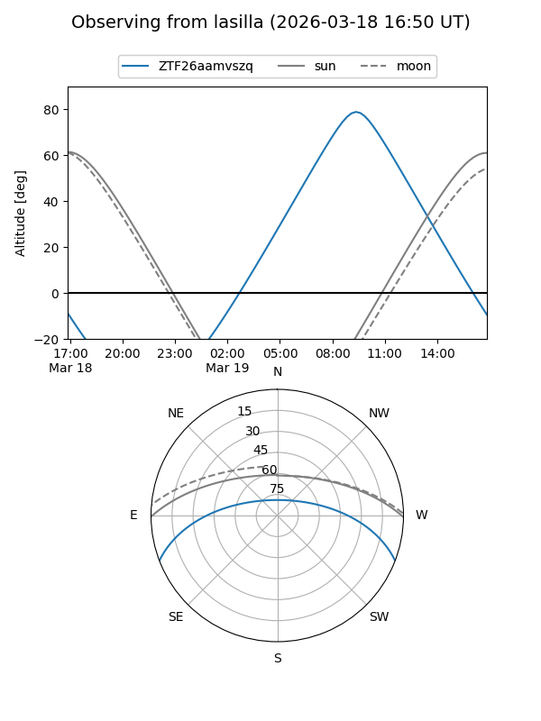
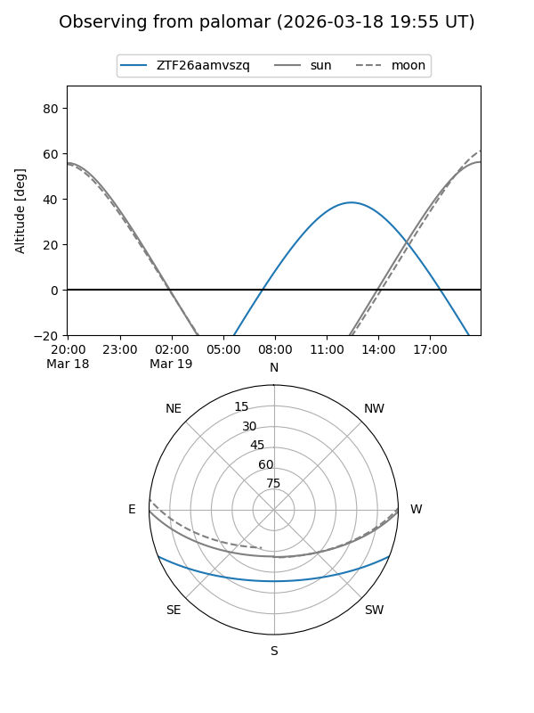

ZTF26aamvszq
Target ZTF26aamvszq at 2026-03-18 15:10
Aliases and brokers:
FINK: link
Lasair: link
ALeRCE: link
alt names
ZTF26aamvszq (ztf,fink_ztf)
Coordinates:
equatorial (ra, dec) = 246.3198,-18.12988
equatorial (HMS+DMS) = 16:25:16.74,-18:07:47.56
galactic (l, b) = (357.9170,+21.20371)
Flags:
Photometry:
last ztfg=20.08
1 ztfg detections
Lightcurve
Visibility


Additional plots